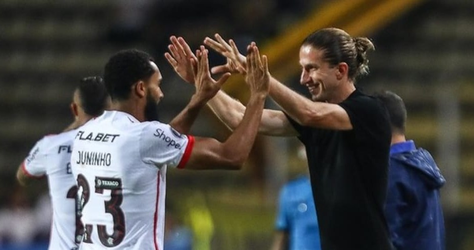

Juninho garante vitória do Flamengo no pior jogo sob
o comando de Filipe Luís
» Abel ironiza atuação 'bipolar' do Palmeiras após bater o Sporting Cristal
» Bahia e Internacional fazem jogo emocionante, mas ficam no empate